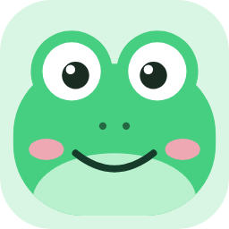

Hopsnap 需要看到屏幕才能截图
只需设置一次：在系统设置里打开开关，再重新打开 Hopsnap 就好。
1屏幕录制必需未允许

Hopsnap等你打开开关…已经打开了？重新打开 Hopsnap
开关打开了！重新打开 Hopsnap 就能用
已允许，可以截图和录屏了
2辅助功能可选未允许
鼠标侧键截图、点击波纹才需要；开了马上生效
还是不行？
开关开着却一直提示，多半是旧版本留下的授权记录。「修复权限」会清掉它，然后在系统设置里再打开一次开关。